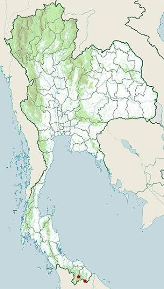

Basic Information
Common Name: Rhinoceros Hornbill
Status/Conservation: Vulnerable [1]
Full Scientific Classification
| Taxonomic Rank | Classification |
|---|---|
| Kingdom | Animalia |
| Phylum | Chordata |
| Subphylum | Vertebrata |
| Class | Aves |
| Subclass | Neornithes |
| Order | Bucerotiformes |
| Suborder | Buceroti |
| Family | Bucerotidae |
| Genus | Buceros |
| Species | B. rhinoceros |
Physical Profile
- Size Range
- 31 to 35 inches in length with a wingspan up to 5 feet.
- Weight
- 4.5 to 6.5 lbs.
- Identification Markings
- Black plumage, white tail with a broad black band, and a massive orange-red and yellow beak with a prominent horn-like structure called a casque. [2]
Habitat & Geography
Native to Southeast Asia, they primarily inhabit the canopies of vast expanses of primary tropical rainforests.
Distribution Map

Ecology & Behavior
Feeding and Diet
Rhinoceros Hornbills are primarily frugivores. Their diet includes:
- Figs (their primary food source)
- Various other rainforest fruits
- Small insects, reptiles, and tree frogs
Life History Cycle
- Courtship & Nesting: Pairs mate for life. The female seals herself inside a hollow tree cavity using mud and feces, leaving only a small slit.
- Incubation: The male feeds the female through the slit for up to 3 months while she incubates 1-2 eggs.
- Fledging: Once the chicks are large enough, the mother breaks out, and both parents feed the chicks until they fledge. [3]
Communication & Adaptations
Their large casque acts as an amplifying resonance chamber for their loud, harsh calls that echo through the rainforest canopy.
Media & Supporting Visuals